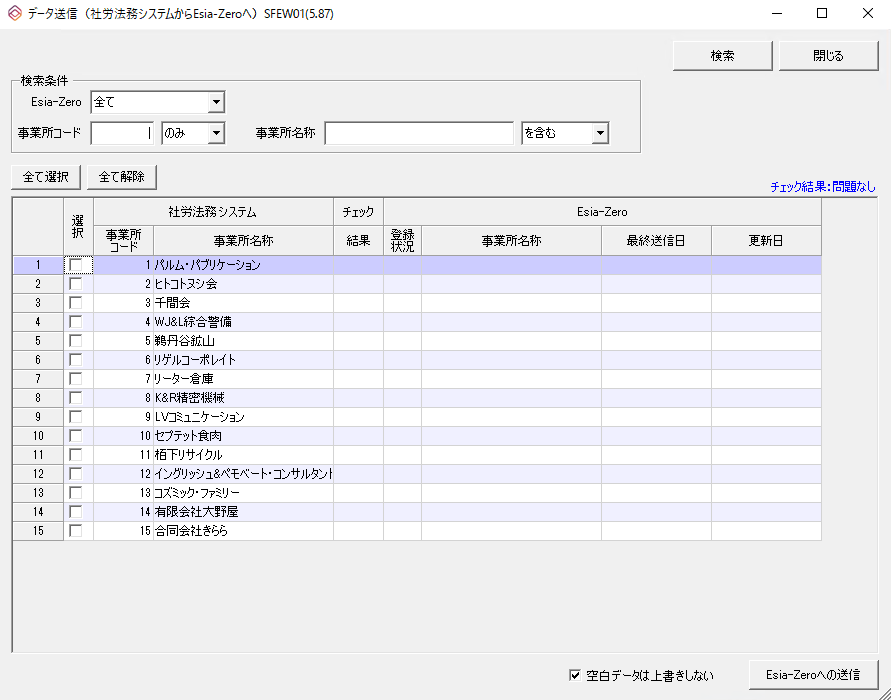
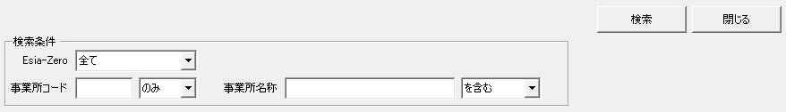
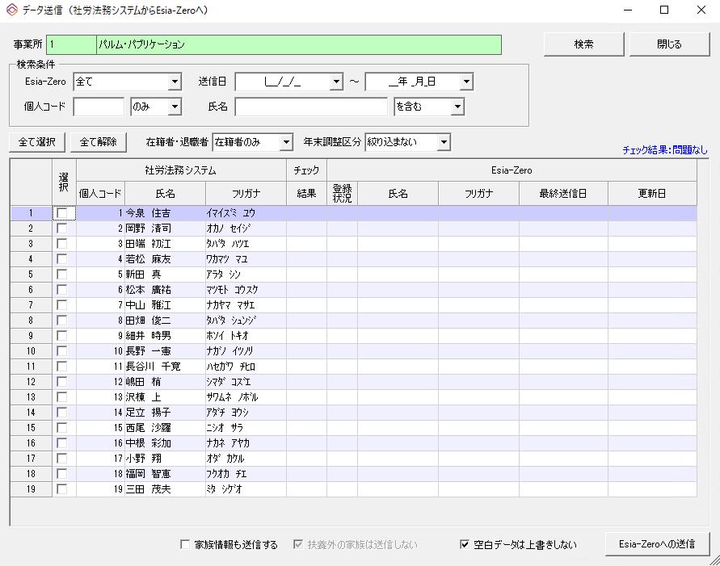
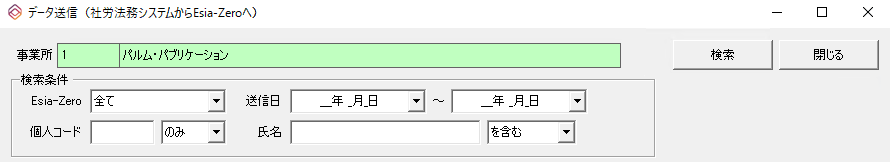
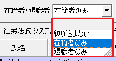
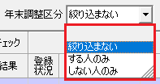
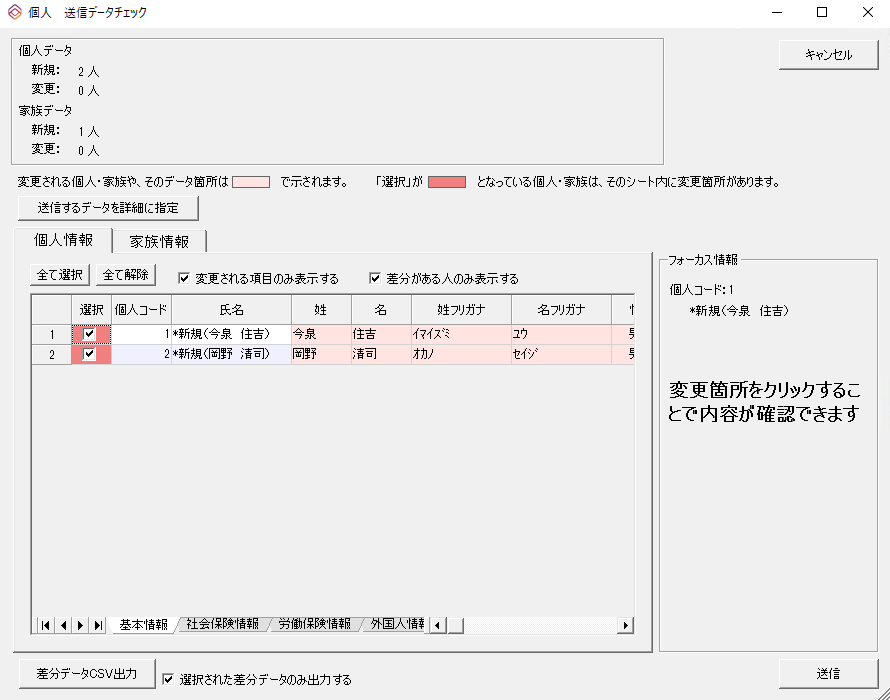
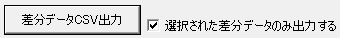
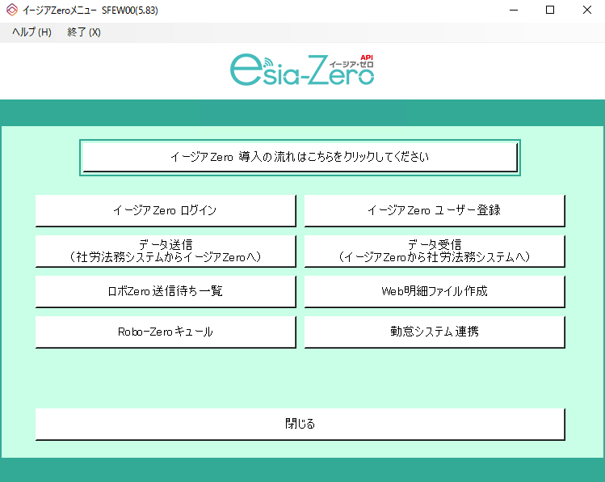

目 次
３-１ 顧問先情報の送信
Esia-Zeroにて処理を行う顧問先情報を、社労法務システムより送信をします。
社労法務システムの事業所情報をEsia-Zeroに送信することで、Esia-Zeroと社労法務システムの連携ができます。
① データ送信
{kind=link}
③ 事業所の選択
この画面より送信する事業所を選択します。
{kind=link}
送信する事業所を選択し、『Esia-Zeroへの送信』ボタンをクリックします。
｜ポイント｜
ａ）イージアZeroにて入社手続きやWeb明細、年末調整などを行う事業所を選択してください。
ｂ）「検索条件」欄にて、顧問先を絞り込むことができます。
{kind=link}
検索条件を選択し、『検索』ボタンをクリックすることで絞り込みができます。
｜ポイント｜
・「Esia-Zero」欄にて、Esia-Zeroに登録されているかを確認することができます。
「登録状況」列に、「〇」が表示されている事業所は登録されています。
「最終送信日」列は、最後に社労法務システムより送信した日付が表示されます。
「更新日」列は、Esia-Zeroにて、顧問先情報を変更した最後の日付が表示されます。
・Esia-Zeroに未登録の顧問先を選択したい場合
「Esia-Zero」欄にて、「Esia-Zero未登録」を選択して『検索』ボタンをクリックします。
・事業所コードが分かっている場合
「事業所コード」欄に入力し、「のみ」を選択しましたら、『検索』ボタンをクリックします。
※ 「のみ」以外に「以下」と「以上」を選択することができます。
事業所コードに意味を持たせて登録されている場合は、2000以下などに設定して絞り込むこともできます。
・事業所名称が分かっている場合
「事業所名称」欄に入力し、「に完全一致」を選択しましたら、『検索』ボタンをクリックします。
※ 「を含む」や「から始まる」、「で終わる」などを選択することができます。
事業所名称の一部文字で絞り込む場合は、「を含む」を選択すると絞り込めます。
ｃ）送信する項目は指定できませんので、選択された事業所情報は全てEsia-Zeroに上書きされます。
値が入っていない項目は上書きされませんので、空欄として上書きしたい場合は「空白データは上書きしない」欄のチェックを外してください。
④ 登録が完了した場合
{kind=link}
３-２ 社員情報の送信
Esia-Zeroに送信した顧問先は、社員情報を社労法務システムより送信をすることができます。
後からも送信することもできますが、従業員にユーザー登録を依頼する場合はここで送信を行ってください。
① 事業所の選択
{kind=link}
② 社員の選択
選択した事業所の社員情報が、社労法務システムより表示されます。
イージアZeroにてWeb明細、年末調整などを行う社員を選択してください。
{kind=link}
送信したい社員を選択して、『Esia-Zeroへの送信』ボタンをクリックします。
｜ポイント｜
ａ）送信したい社員の選択は、『選択』列にチェックを付けます。
ｂ）「在籍者・退職者」が「在籍者のみ」になっていますので、「全て選択」ボタンをクリックし、全員を選択後に『Esia-Zeroへ送信』ボタンをクリックします。
ｃ）検索条件にて、社員を絞り込むことができます。
{kind=link}
検索条件を選択して、『検索』ボタンをクリックすることで絞り込みができます。
｜ポイント｜
・Esia-Zero欄にて、Esia-Zeroに登録されているかを確認することができます。
「登録状況」列に「〇」が表示されている社員は、登録されています。
最新送信日列は、最後に社労法務システムより送信した日付が表示されます。
更新日列は、Esia-Zeroにて社員情報を変更した最後の日付が表示されます。
・Esia-Zeroに未登録の社員を選択したい場合
「Esia-Zero」欄にて「Esia-Zero未登録」を選択し、『検索』ボタンをクリックします。
・個人コードが分かっている場合
「個人コード」欄を入力し、「のみ」を選択しましたら『検索』ボタンをクリックします。
※ 「のみ」以外に「以下」と「以上」を選択することができます。
個人コードに意味を持たせて登録されている場合は、2000以下などに設定して絞り込むこともできます。
・氏名が分かっている場合
「氏名」を入力し、「に完全一致」を選択したら『検索』をクリックします。
※ 「を含む」や「から始まる」、「で終わる」などを選択することができます。
氏名の一部文字で絞り込む場合（姓だけで絞り込む）は、「を含む」を選択すると絞り込めます。
ｄ）「在籍者・退職者」にて絞り込むことができます。
{kind=link}
在籍者と退職者で絞り込むことができます。
｜ポイント｜
・「在職者のみ」を選択することが一般的ですが、「退職者のみ」や「絞り込まない」を選択することもできます。
無駄なトークンを発生させないために、必要な社員だけを選択するようにしてください。
ｅ）「年末調整区分」にて絞り込むことができます。
{kind=link}
年末調整を行う社員だけで絞り込むことができます。
｜ポイント｜
・イージアZeroにて年末調整だけを行う場合は、「する人のみ」で絞り込むことでトークンを節約することができます。
ｆ）「家族情報も送信する」欄にチェックを付けることで、配偶者や扶養家族情報も送信することができます。
チェックを付けますと、「扶養外の家族は送信しない」欄にチェックをつけることができます。
ｇ）送信する項目は指定できませんので、選択された社員情報は全て、Esia-Zeroに上書きされます。
値が入っていない項目は上書きされませんので、空欄として上書きしたい場合は「空白データは上書きしない」欄のチェックを外してください。
｜年末調整を行う場合のポイント｜
・年末調整を行う場合は、「家族情報も送信する」欄に必ずチェックを付けてください。
・同時に「扶養外の家族は送信しない」欄も、チェックが付いた状態にしてください。
※ チェックを外すと就職した子供などが送信されることになるので注意してください。
③ 送信する内容の確認
選択した社員の情報を確認することができます。
ここで、送信する社員の情報漏れなどを確認してください。
{kind=link}
内容を確認し、問題なければ『送信』ボタンをクリックします。
｜ポイント｜
ａ）個人情報と家族情報を確認することができます。
個人情報は、基本情報と社会保険情報、労働保険情報、外国人情報が確認できます。
家族情報は、基本情報と配偶者外国人情報が確認できます。
ｂ）送信内容を、CSV出力し確認することができます。
{kind=link}
「差分データCSV出力」ボタンをクリックしますと、CSVファイルを出力することができます。
｜ポイント｜
・出力されたCSVファイルにて送信する前に、内容を確認することができます。
・「選択された差分データのみ出力する」欄のチェックを外すと、全ての情報が出力されます。
ｃ） が送信される項目です。 は送信されない項目です。
初めて送信する社員につきましては、全項目が となっています。
ｄ）Esia-Zeroに登録済みの社員につきましては、変更が必要な項目のみ表示されています。
{kind=link}
社労法務システムより、Esia-Zeroにデータ送信を始めます。
データ送信を行うことで、Esia-Zeroにて顧問先を管理することができます。
イージアZeroメニューより、『データ送信（社労法務システムからイージアZeroへ）』ボタンをクリックし、送信を開始します。